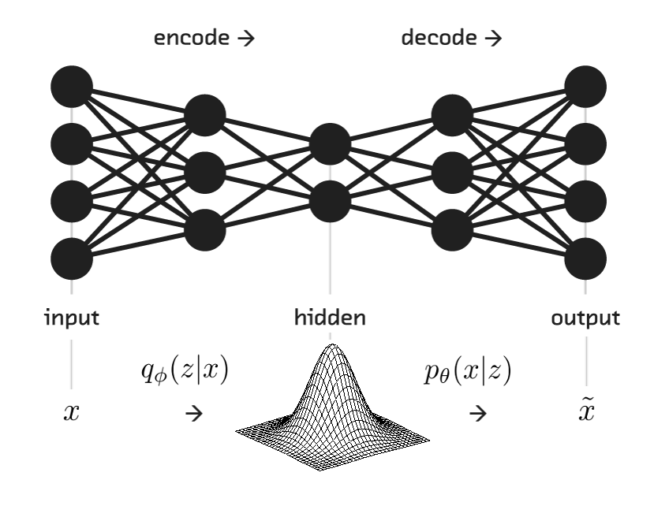

Understanding Variational Autoencoder Cost Function -¶
In this article, the goal is to understand the ELBO (Evidence Lower Bound) cost function used in training Variational Autoencoder. Before moving forward, the article is designed with an assumption that the readers possess a basic understanding of Generative Modelling and Variational Autoencoders.
The following sections shall cover -
- Pseudo Code for training VAE
- Stating the Cost function for Variational Autoencoders (VAE).
- KL Divergence - Definition and its importance.
- Deriving a trainable cost function.
1. Pseudo Code for training VAE -¶

While not converged:
$ X_{batch} = MiniBatch(X, batchSize) $
$ q(z | x;\phi) = Encoder(X_{batch}) $
$ z \sim q(z | x;\phi) : Reparamaterization\ Trick $
$ reconstructed\ image\ \sim \ p(x | z; \theta) = Generator(z) $
$ loss \ =\ MSE(X_{batch}, resconstructed\ image) $
$ update\ \theta : Gradient\ updates$
2. VAE Cost Function -¶
The cost function for a Variational Encoder consists of two parts, namely -
- The Log Likelihood function - $E[\ log \ p(x| z; \theta)\ ]$
- The KL divergence $ D_{KL}[\ q(z|x; \phi)\ ||\ p(x|z;\theta)\ ]$
- The KL divergence (also known as relative Entropy) is used to measure how different one distribution is from another.
- It can be seen that it would be ideal to maximize both the quantities mentioned above.
- This translates into an optimization problem for maximizing ELBO.
- However, we typically try to minimize the cost while training and hence the cost function of VAE can be chosen to be -ELBO.
Mathematically,
\begin{align} \\ ELBO = E[\ log \ p(x| z; \theta)\ ] - D_{KL}[\ q(z|x; \phi)\ ||\ p(z)\ ] \tag{1} \\ \end{align}and,
\begin{align}
VAE_{cost} & = -ELBO \\
& = - \big(E[\ log \ p(x| z; \theta)\ ] - D_{KL}[\ q(z|x; \phi)\ ||\ p(z)\ ]\big) \tag{2}\\
\end{align}
3. Kullback-Leibler Divergence and its Importance -¶
- As we know, VAE works on the principles of variational inference where the bottleneck represents the parameters of a Multinormal Gaussian Distribution from which samples can be drawn.
- KL divergence provides a measure for comparing one distribution with other.
- Mathematically, the Relative Entropy (KL Divergence) is defined by -
Where,
\begin{align}
H(P, Q) = E_{x \sim P}[-log Q(x)] \tag{4}
\end{align}
and
\begin{align}
H(P) = E_{x \sim P}[-log P(x)] \tag{5}
\end{align}
\begin{align}
\therefore D_{KL}(P || Q) &= E_{x \sim P}[-log Q(x)] - E_{x \sim P}[-log P(x)] \\
&= E_{x \sim P}[- log Q(x) - (- log P(x))] \\
&= E_{x \sim P}[log P(x) - log Q(x)] \\
&= E_{x \sim P}[log \frac{P(x)}{Q(x)}] \tag{3}
\end{align}
For Discrete Distributions - \begin{align} D_{KL}(P || Q) = \sum_{i} \big(P(i) \ log \frac{P(i)}{Q(i)}\big) \tag{4} \end{align}
For Continuous Distributions - \begin{align} D_{KL}(P || Q) = \int \big(P(x) \ log \frac{P(x)}{Q(x)}\big) \ \partial{x} \tag{5} \end{align}
Properties of KL Divergence -¶
KL divergence is Non-Negative. \begin{align} if P = Q then D_{KL} = 0 if P \neq Q then KL > 0 \end{align}
KL Divergence is Asymmetric \begin{align} D_{KL}(P \ || \ Q) \neq D_{KL}(Q \ || \ P) \end{align}
- The asymmetric property of KL divergence is as result of the asymmetric nature of cross entropy.
- $D_{KL}(P \ || Q\ )$ can be used when you wish to approximate P using distribution Q.
- $D_{KL}(Q \ || P\ )$ can be used when you wish to approximate Q using distribution P.
Derivation of ELBO -¶
- Let us define $q(z | x;\phi)$ as the output of Encoder Network and let $p(z | x; \phi)$ as its true distribution.
- Ideally we would like q(z | x) to be similar to p(z | x).
- The relationship can be captured using KL Divergence.
- From Equation (5), we can define KL divergence between $q(z|x)$ and $p(z|x)$ as - \begin{align} D_{KL}[q(z | x) || \ p(z | x)] &= \int \big( q(z | x) log \frac{q(z | x)}{p(z | x)} \big) \partial{x} \\ &= E\big[log \frac{q(z|x)}{p(z|x)}\big] \\ &=E\big[log(q(z | x)) - log(p(z|x)))\big] \tag{6} \end{align}
Using Bayes Theorem -
\begin{align}
p(z | \ x) = \frac{p(x | \ z) p(z)}{p(x)} \tag{7}
\end{align}
From Eq.(6) and Eq.(7)
\begin{align} D_{KL}[q(z\ | \ x) || \ p(z\ | x\ )] &= E\big[log\ (q(z\ |\ x)) - log\big(\frac{p(x\ | \ z)\ p(z)}{p(x)}\big)\big]\\ &= E\big[log\ (q(z\ |\ x)) - log(p(x\ |\ z)) - log(p(z)) + log(p(x))\big] \tag{8} \end{align}Since $p(x)$ is independent of z, \begin{align} E[log(p(x))] = log(p(x)) \tag{9} \end{align}
From Eq. (8) and Eq.(9), \begin{align} D_{KL}[q(z\ | \ x) || \ p(z\ | x\ )] &= E\big[log\ (q(z\ |\ x)) - log(p(x\ |\ z)) - log(p(z))\big] + log(p(x)) \tag{10} \end{align}
Rearranging terms in Eq(10), we get -
\begin{align} log(p(x)) - D_{KL}[q(z\ | \ x) || \ p(z\ | x\ )] &= E\big[log\ (p(x\ |\ z)) - log(q(z\ |\ x)) + log(p(z))\big] \\ &= E\big[log\ (p(x\ |\ z))\big] - E\big[ log \frac{q(z\ | \ x)}{p(z)}\big] \tag{11} \end{align}But, \begin{align} E\big[ log \frac{q(z\ | \ x)}{p(z)}\big] = D_{KL}(q(z\ | x)\ ||\ p(z)) \tag{12} \end{align}
From Eq.(11) and Eq(12) - \begin{align} log(p(x)) - D_{KL}[q(z\ | \ x) || \ p(z\ | x\ )] = E\big[log\ (p(x\ |\ z))\big] - D_{KL}(q(z\ | x)\ ||\ p(z)) \tag{13} \end{align}
Hence Proved.¶
Final Comments -¶
- It is can seen that both LHS and RHS of above equation represent ELBO.
- For training a VAE, we shall use RHS of Eq(13) since it can be computed using data available.
- Typically, the prior p(z) is initialized with $\mu = 0 $ and $\sigma = 1$ .
- With term $D_{KL}(q(z\ | x)\ ||\ p(z)) $, we try to approximate $q(z\ | x\ )$ using $p(z)$ i.e We are forcing $q(z\ | x\ )$ to be more like $p(z)$.
Comments
comments powered by Disqus